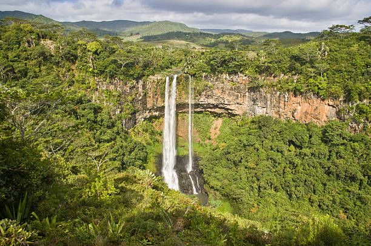
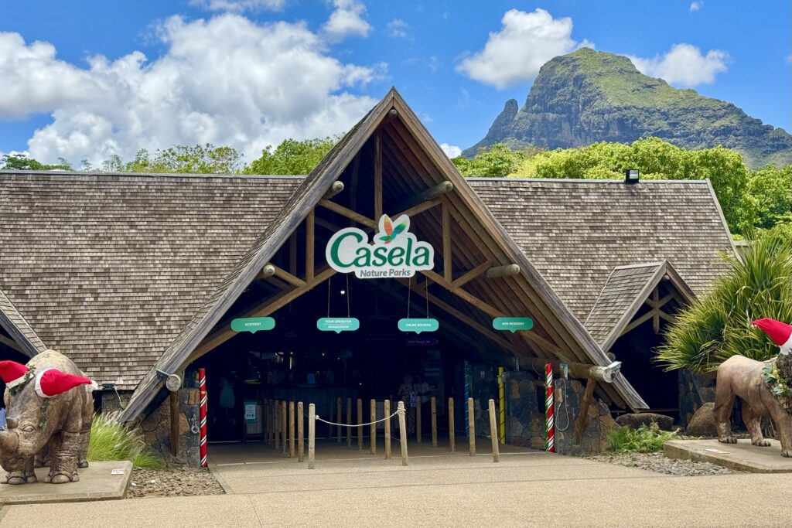
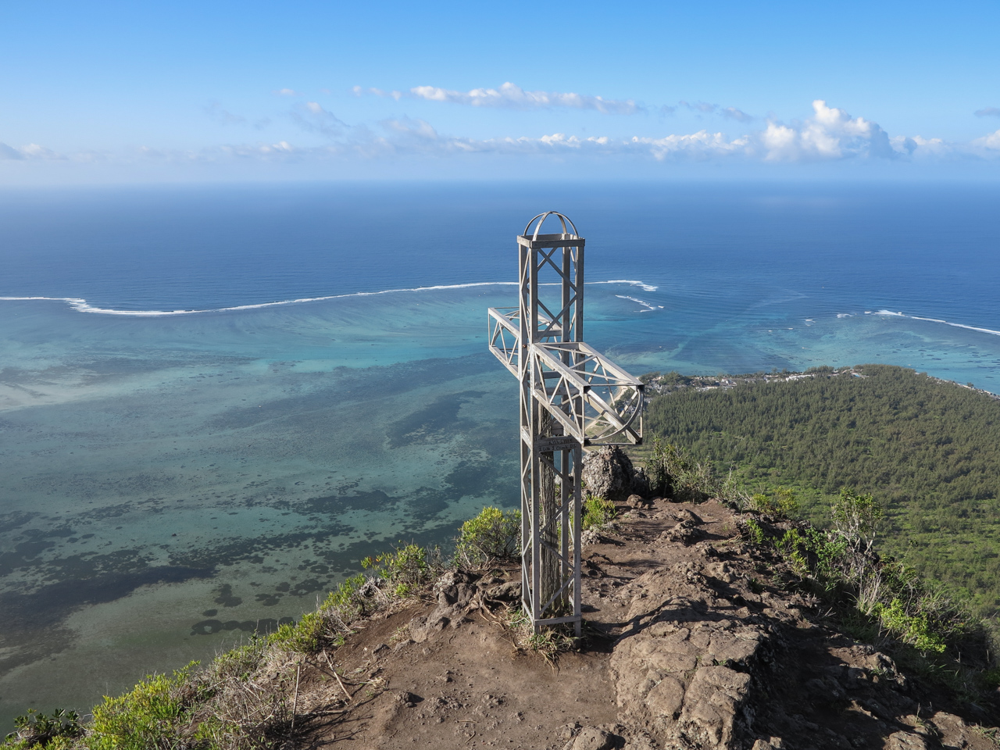
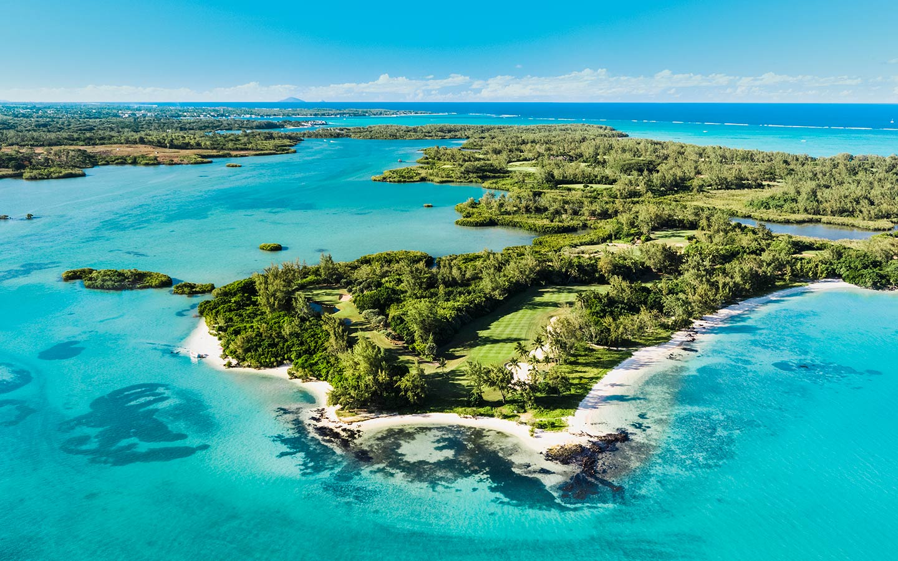
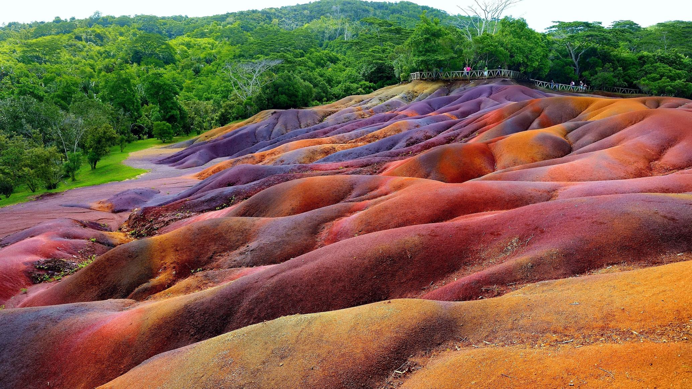
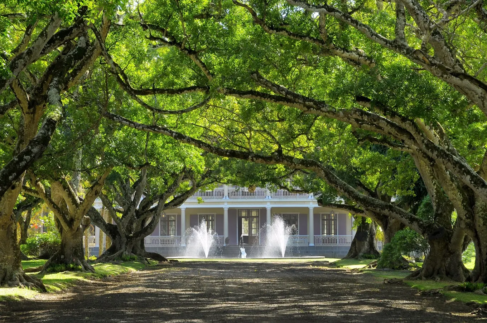

Discover Popular Places

Grand Bassin
Grand Bassin is a sacred crater lake in Mauritius, nestled in the mountains. It is considered a holy site for Hindus and attracts pilgrims, especially during Maha Shivaratri. The lake is surrounded by lush greenery and features statues, temples, and scenic walking paths, making it both a spiritual and natural landmark.

Black River Gorges
Black River Gorges is a national park in Mauritius known for its dense forests, rugged mountains, and diverse wildlife. It offers numerous hiking trails, scenic viewpoints, and waterfalls, making it a perfect destination for nature lovers and adventure seekers.

Casela Nature Parks
Casela Nature Park is a popular wildlife and adventure park in Mauritius, offering safari tours, animal encounters, zip-lining, and interactive outdoor activities. It's an ideal spot for families and nature enthusiasts seeking fun and adventure.

Le Morne Brabant
Le Morne Brabant is a UNESCO World Heritage site in Mauritius, famous for its iconic mountain and breathtaking views. Historically, it served as a refuge for escaped slaves, and today it's a popular spot for hiking, sightseeing, and learning about the island's cultural heritage.

Île aux Cerfs
Île aux Cerfs is a stunning island off the east coast of Mauritius, known for its white sandy beaches, turquoise waters, and lush landscapes. It's a perfect destination for water sports, relaxation, and enjoying tropical scenery.

Chamarel
Chamarel is a scenic area in Mauritius famous for its Seven Coloured Earths, lush forests, and striking waterfalls. It's a must-visit destination for nature lovers and photographers seeking unique landscapes.

Château de Labourdonnais
Château de Labourdonnais is a historic colonial mansion in Mauritius surrounded by gardens and orchards. Built in the 19th century, it reflects elegant Creole architecture and the island's rich colonial heritage.